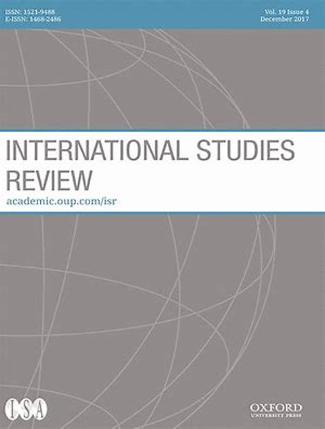
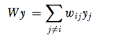
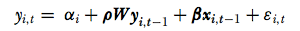
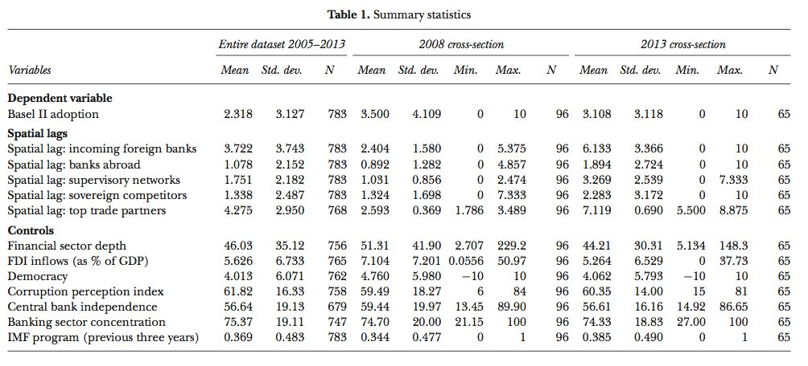
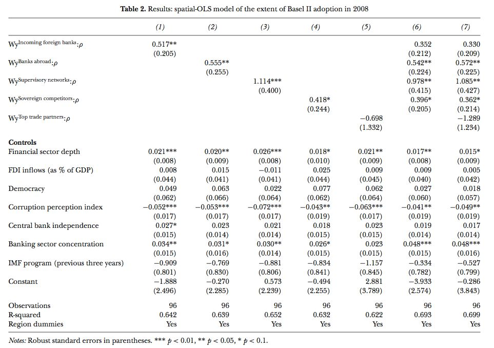

收录于合集

作品简介
【作者】 Emily Jones，牛津大学布拉瓦特尼克政府学院公共政策副教授及全球经济治理项目主任。她的研究兴趣包括金融监管和贸易的政治，重点关注发展中国家。
Alexandra O. Zeitz, 牛津大学博士生，欧洲大学研究所2019-2020学年Max Weber研究员。从2020年7月起，她将成为布朗大学政治学助理教授。她的研究兴趣包括国际金融、发展援助和非洲政治。
【 编译】 王泽尘（英国曼彻斯特大学社会科学学院政治经济学专业硕士生）
【校对】 扎西旺姆
【审核 】 赵雷
【排版】 梁鑫昱
【来源】 Emily Jones, Alexandra O Zeitz, Regulatory Convergence in the Financial Periphery: How Interdependence Shapes Regulators’ Decisions, International Studies Quarterly, Volume 63 , Issue 4, December 2019, Pages 908–922, https://doi.org/10.1093/isq/sqz068.
期刊简介

《国际研究季刊》（ International Studies Quarterly ）是国际研究协会的旗舰期刊，由牛津大学出版社每年发行四期，旨在发表与国际研究中重要理论性、实证性、规范性主题相关的领先学术成果。根据Journal Citation Reports的数据，2018年该期刊的影响因子为2.172。
金融外围的监管趋同: 相互依赖如何影响监管机构的决策
Regulatory Convergence in the Financial Periphery: How Interdependence Shapes Regulators’ Decisions
文章导读
一 、介绍
自19世纪80年代以来，商品、服务、资本和信息市场的全球化程度急剧增加，导致各国在经济和监管方面的相互依赖日益加深。在本文中，作者研究了全球经济中核心国家间流行的规则通过相互依赖的关系传播到外围国家的过程。具体来说，作者研究了国际银行标准 –巴塞尔标准(Basel standards)，是如何从全球经济的核心传播到外围的。作者发现，当处于金融外围的国家与已采用国际银行标准的国家有直接跨境关系时，它们会更多地采用国际标准。
作者认为，金融体系中的相互依赖关系为各国监管机构在辖区内采用现行的规管标准提供了激励机制。在国际银行标准上的监管趋同并非是因为这种标准能够适应每个采用国的金融状况，而是因为，这种标准可以成为监管机构沟通的基础 –监管机构通过银行的跨境业务或通过加入国际网络进行联系，同时也可以成为向国际投资者发出信号的机制。
本文建立在新的相互依赖方法(interdependence approach)上，这种方法试图通过考察地方行动者之间的跨境联系来解释国际政治经济的系统性动态。其核心论点是，影响监管决策的因素，并非是简单而论的一国经济的开放程度以及其所接收到的国际市场信号的程度，而是这些信号的性质。作者主张基于这样一种认识，即两个国家可能在融入全球经济的程度上相似，但跨境经济关系的性质可能不同。
本文专注于采用国际标准的金融外围国家及其监管机构。这里所说的金融外围，指的是那些没有深厚金融体系、与金融中心没有紧密联系、以及没有参与国际标准制定论坛的国家。全球绝大多数的监管机构在巴塞尔委员会(Basel committee)中没有代表，因此其对标准制定过程没有影响力，同时其监管的金融行业往往相对较小。因此，其作为规则制定者所采用国际银行标准的决策是值得解释的。文章展示了核心国家与外围国家以及外围国家之间的一体化差异模式(differential patterns of integration)如何导致外围国家的监管机构在采用国际银行标准方面的差异。
具体来说，文章确定了四种促进外围国家在核心监管机构制定标准上趋同的跨境关系。首先，当外国银行进入一个外围国家时，外围国家的监管机构有动机要向外国银行母国的银行监管规定靠拢，以促进外围国家与外国银行母国监管机构的沟通。另一方面，随着外围国家的银行在国际上扩张业务，其监管机构受到激励，通过采用本国银行所进入的国家的监管标准，来缓解本国银行扩张过程中的问题并促进与东道国(host countries)监管机构的沟通。第三，随着银行业的全球化，各国的监管机构已经成为了国际监管网络的一部分，监管网络提供的信息和强大的社会化效使监管机构趋同于同行的行为。第四，银行业的全球化意味着银行要在国际上竞争以吸引资本。为了吸引投资者进入，外围国家的监管机构与其竞争对手在司法管辖上的普遍采纳程度趋同。
二、外围国家的监管机构如何应对国际银行业标准
金融外围国家的监管机构是否应将其银行业监管规定建立在巴塞尔标准之上?答案并非一目了然。巴塞尔协议旨在监管相对简单的银行体系，至今仍因其监管的有效性而备受赞誉。到上世纪90年代末，巴塞尔I标准(Basel I)已成为巴塞尔委员会(Basel Committee)以外100多个国家银行业监管规定的基础。之后的《巴塞尔协议II》(Basel II)和《巴塞尔协议III》(Basel III)，是为更活跃于国际市场的银行集团设计的，它们的业务模式复杂且面临各种风险，包括自身业务复杂性带来的风险。比起巴塞尔协议I，巴塞尔协议II和III标准的高成本使得监管机构和银行在实施方面更为复杂，而且其监管的有效性也备受争议，尤其是就规模较小的银行和发展中国家而言是如此。
巴塞尔委员会以外的监管机构可以以多种方式应对巴塞尔银行标准，因此趋同的过程不必是统一的。虽然巴塞尔协议I是一个相对简单和直接的标准，但巴塞尔协议II和III实际上是单个规则的概要。监管机构可以挑选希望采用的部分，并根据当地情况修改标准。
当然，正式采用一项国际标准并不一定会导致有意义的实施和执行。监管机构可能会在名义上采用这些标准，但却不严格执行(under- enforce)，这实际上导致了对承诺的“软背弃”（soft defections），这种现象被称为“表面上的”或“假装的”遵守(cosmetic or mock compliance)。本文的分析有助于阐明激励外围监管机构趋同于国际标准的国际因素。
数据显示，《巴塞尔协议II》已被广泛地传播至金融核心之外，在作者掌握的有关100个司法管辖区的数据中，有71个在2015年之前至少采纳了《巴塞尔协议II》的10个组成部分中的一个。然而，采用是具有高度选择性的。截至2015年，巴塞尔委员会以外的国家平均只执行了巴塞尔协议II的十个部分中的四个(平均值:3.52)。外围国家的监管机构倾向于采用巴塞尔协议II中较为简单的条款。《巴塞尔协议II》正在被处于不同发展水平的国家采用。
三、金融外围国家的相互依赖和监管决定
有关相互依赖法的研究将全球经济视为一个系统，通过包括企业、政府、官员和民间社会团体在内的社会行为者以跨境联系的方式将各国联系在一起。根据这些论点，作者确定了银行、监管机构和投资者之间的四种特定跨境关系，并预测这些关系将成为传播国际银行业标准的媒介。监管机构在采纳国际银行业标准方面的选择受到其他国家监管机构先前选择的影响，这种影响是通过与银行业全球化相关的特定相互依赖形式来调节的。
3.1 “走进来”的外资银行 (Incoming foreign banks)
监管机构可根据外国银行所在国监管机构的决定，通过实施巴塞尔标准，以促进在其管辖范围内经营的外国银行的运作和监督。
当一家外国银行进入一个新国家并以子公司形式经营时，该子公司就属于当地监管机构的管辖范围。从外资银行的角度来看，如果东道国监管机构的监管要求与母国（home）不同，银行就必须实行双重报告制度，从而产生交易成本。因此，作者预计国际银行将支持所在和东道国之间的监管协调。
从东道国监管机构的角度来看，与外国银行的母国监管机构保持一致的标准是有优势的的，可以促进两国监管机构之间的协调。正是因为巴塞尔标准得到广泛认可，它们才成为监管机构可以协调的焦点。因此，通过在本国管辖范围内经营的外国银行与本国监管机构建立联系，可以预计金融外围国家的监管机构会与外国银行母国的监管机构就监管标准保持一致。
3.2 “走出去”的国内银行 (Outgoing domestic banks)
监管机构也可以采用国际银行业标准，以促进国内银行的国际扩张水平。本文预计有关采用国际标准的决策将反映国内银行在拓展海外业务时所在国家的现行规定。
由于跨境金融蔓延的风险，东道国的监管机构在允许外国银行在其管辖范围内经营之前，将寻求确保该银行在所在国受到健全的监管。国际标准可以提供一个“认知路标”(epistemic signpost)，帮助东道国监管机构做出这样的评估。在本世纪头十年，遵守巴塞尔核心原则以及从2007年起实施巴塞尔协议II 标准，是欧盟和美国监管机构进行相关评估的共同参照点。因此，执行国际基准虽然不是进入市场的一个明确条件，但作为一项实际的管制政策，一直是进入这些市场的一个重要机制。有证据表明，正是认识到这一监管要求，金融外围国家的监管机构采用了巴塞尔标准，以帮助该国银行进入欧元区和美国市场。
即使采用巴塞尔标准不是进入市场的先决条件，监管机构也可以采用这一标准，以提高其在国际上活跃银行的声誉。总体而言，作者预计金融外围国家的监管机构将在监管标准上趋同，这些监管机构通过在海外运营的国内银行与这些监管机构联系在一起。
3.3 跨国对等网络
监管机构在采纳国际银行标准方面的决策，可能会受到同行决策的影响。其与同行之间通过跨国专业网络相互联系。
在设计金融监管时，监管者面临着大量的不确定性，这使得他们很难确定什么样的监管最适合某个特定的司法管辖区。考虑到这一点，作者希望监管机构借鉴并吸取与本国相似的国家监管机构的经验，并将这些经验应用于本国政策的设计，即便这未必会改善政策的结果。特别是，跨国监管网络可以成为监管机构向同行学习的重要场合。
更广泛地说，国际金融网络促进了相关官员之间的共同知识和“共同理解”(common understanding)，使他们对于特定政策的预期趋同。金融监管机构尤其倾向于效仿同行，因为他们的职业中的激励机制阻止了他们进行新的监管实验。遵循“国际最佳实践”(international best practice)和成功同行的政策，有助于使监管机构在金融危机发生时免受问责和伴随成本的影响。当网络发布特定的管理标准系列时，因为不执行可能导致来自同行的社会谴责, 这些影响尤其强烈。
作者预计，监管机构将向同行学习并效仿彼此在采纳巴塞尔协议方面的决策。在其他条件相同的情况下，如果监管机构参与的网络中，其同行是巴塞尔标准的高程度采纳者，将导致更高水平的采纳。
3.4 争夺国际资本
最后，由于国际投资者和其他市场参与者青睐巴塞尔标准等简单的衡量标准，它们提供了对各国表现的直接评估，可以很容易地纳入风险回报计算。因此，作者预计监管机构对巴塞尔标准的决定，将效仿与其一同竞争国际资本的他国监管机构的决定，特别是对金融服务业的投资。
除了个别银行努力吸引投资者之外，各国政府可能还是会寻求采纳巴塞尔协议，作为吸引投资进入金融服务业的大战略的一部分。发展成熟及试图获得市场份额的金融中心，都刻意塑造安全稳定的投资目的地的形象，以吸引更多利润丰厚的业务。遵守国际标准的声誉回报相对较高，因此政府可能愿意承担服从的成本，以获得声誉上的好处。至关重要的是，当监管机构采用国际银行业标准作为吸引国际资本的战略的一部分时，作者预计他们的决定将受到竞争对手监管决定的影响。作者还预计将会观察到集群现象，竞争对手国家的监管机构也会以类似的方式对巴塞尔标准做出回应。
四、数据及方法
为了检验关于相互依赖和跨境互动对监管机构对巴塞尔协议II反影响的论点，作者预估了巴塞尔协议II在外围国家中采用的一系列空间滞后和空间自回归模型。通过空间滞后可捕捉上述的四种金融相互依赖的形式。由于数据可用性的原因，本文将重点放在巴塞尔协议II上，但是同样期望类似的过程在正在进行的巴塞尔协议III中发挥作用。
4.1 数据描述
研究的大部分数据(约80个国家)来自2012年至2015年期间，金融稳定研究所对巴塞尔委员会非成员国的年度调查。该调查要求受访者报告他们对巴塞尔协议各个子条款的采用水平，并指出自2004年首次引入每个子条款以来的年份。为了测试关于外围国家与核心国家以及外围国家之间相互依赖关系的预期，作者在调查数据的基础上增加了手工收集的巴塞尔委员会成员辖区的数据。
本文因变量包括巴塞尔委员会以外的国家通过的巴塞尔协议II子条款的总数(范围从0到10)，由于针对各国选取非常相似的采用方式，此举不会掩盖采用性质的差异。
4.2 空间滞后变量
研究通过空间滞后模型，其中关键的解释变量是对其他单位的因变量的加权观测值，其计算方法是将因变量的一个向量与单位间的一个N×N矩阵W相乘。作者选择对权重矩阵进行行标准化（row- standardize），这样国家级别的所有权重之和为1。对检验论点最重要的是，在那些通过金融相互依赖而相互连接的国家中巴塞尔协议II的平均采纳水平。由于行标准化的空间滞后，每个国家的空间滞后的变化主要来自其连接中巴塞尔协议II采用决策变化。相比之下，对于非行标准化的空间滞后，每个国家的空间滞后的变化既源于该国拥有的连接数量，也源于其连接的采用决策变化。计算方法如下：

外来银行:一个二分加权矩阵，如果某年某国i是某国j银行的东道国，则该矩阵等于1。
在海外经营的银行:一个二分加权矩阵，如果某一年有一家来自i国的银行在j国经营，它的值为1。
银行监管网络:一个二分加权矩阵，如果两个国家都是至少一个共享的国际监管网络的成员，则其值为1。
资本竞争:一个二分的加权矩阵，如果不同国家在某一年拥有相同的主权信用，它的值为1。
贸易伙伴:作为一种控制，通过包括国家间贸易联系强度的空间滞后，以确保其他四个空间滞后反映的是银行特有的相互依赖。如果i国和j国之间的贸易总额占i国国内生产总值的比例处于前30%，则该加权矩阵取1的值。
4.3 控制变量
除了上述空间滞后变量,控制评估模型包括以下变量:金融行业深度(私人部门信贷占GDP的百分之一), 外国直接投资(FDI)流入,民主政体(Policy IV),清廉(corruption perception) (“透明国际” Transparency International), 中央银行的独立性, 银行业集中, 一个国家是否在之前三年与国际货币基金组织达成协议。
4.4 评估方法
“naïve”空间普通最小二乘法(OLS)估计最容易捕捉,因此，因此作者使用spatial-OLS模型报告结果。模型如下：

ρ是1×4向量空间滞后系数，W yi,t −1 国家i的空间时间之后结果，β系数是一个矢量，Xi,t−1是国家i的时间滞后控制变量向量, εi, t 表示国家i和时间t的随机扰动。
 
五、分析结果
从2008年的结果可以发现巴塞尔协议II通过的空间依赖性的一致证据，特别是通过在海外运营的银行和监管网络中的联合成员关系。模型1-5分别包含5个空间滞后项，然后将第6列和第7列中单个模型的空间滞后项合并。作者将重点分析第7列中的最终模型，其中包含所有5个空间滞后。根据2008年的模型数据结果，在银行向海外扩张（bank abroad）以及国际监管（supervisory networks）所产生的相互依赖中，可以发现在空间上产生了积极的、统计学上显著的影响。这表明，巴塞尔委员会以外的国家受到本国拥有海外业务的监管银行监管决定的影响。这种趋同可能源于监管机构之间的合作，监管机构受益于拥有一个监管协调中心。同时，共有成员的空间效应超出了区域内单纯的单位相似关系，并表明监管机构正在向这些网络中的同行学习，或许还在效仿他们。
相反，在外资银行进入（Incoming foreign banks）与资本竞争（Sovereign competition）空间依赖性证据较少，在贸易联系（top trade partner）中并未发现统计上显著的关系。其他控制措施在显著效果大体上与预期一致。这些结果说明了国内因素在推动金融外围地区监管改革方面的相对作用。一方面，衡量政治和制度特征(如民主和央行独立性)的指标与巴塞尔协议II的通过程度没有显著关联，这表明相互依赖的国际关系更为重要。然而，有迹象表明，国内因素与银行标准的适宜性有关(即，金融行业的深度和银行业的集中度)决定了巴塞尔协议II的采用程度。
在2013年采用《巴塞尔协议II》的模式中，资本竞争是空间依赖的基础，但通过海外银行运营而建立的关系和监管网络中的联合成员身份，不再像2008年那样在统计上成为监管趋同的重要驱动因素。
虽然空间滞后量均为正，且在很大程度上具有统计学意义(见表3中的模型8-11)，但在全模型中，只有资本竞争的空间之后具有统计学意义(见表3中的模型14)，而外资银行的空间滞后则接近统计学意义。因此，在2013年的金融外围国家中，巴塞尔协议II的采纳程度与处于类似风险等级的国家对巴塞尔协议II的采纳程度有关。对2008年和2013年的截面数据进行比较，突显出随着外围国家结构的变化和巴塞尔协议II在全球范围内的推广，监管变化的驱动因素存在差异。
六、结论 **** ****
文章认为，银行、监管机构和投资者之间的特定跨境关系，推动了国际银行业标准从金融体系核心国家向外围国家的扩散。本文的核心发现是，监管机构在采纳国际标准方面的决定是由监管机构的选择所决定的，这些监管机构通过个体银行的跨境业务、跨国专业网络和资本竞争联系在一起。尽管国际考虑决定了监管决策，但重要的不是各国对全球经济开放的程度，而是这些联系的性质以及与之相连的国家。
随着国际政策制定者之间的共识日益增强，在银行业监管方面，单一标准可能并不适用于所有国家。巴塞尔承诺以外的国家，尤其是发展中国家，应该有选择性地执行国际标准并采取相应的方法。然而由于金融全球化所产生的强大的声誉、竞争和功能性激励，可能会导致监管机构采用即使不符合本国环境的国际标准。因此这是一个要求国际标准和标准制定过程进行改革, 从而更好地反映金融外围国家的利益的有力理由。